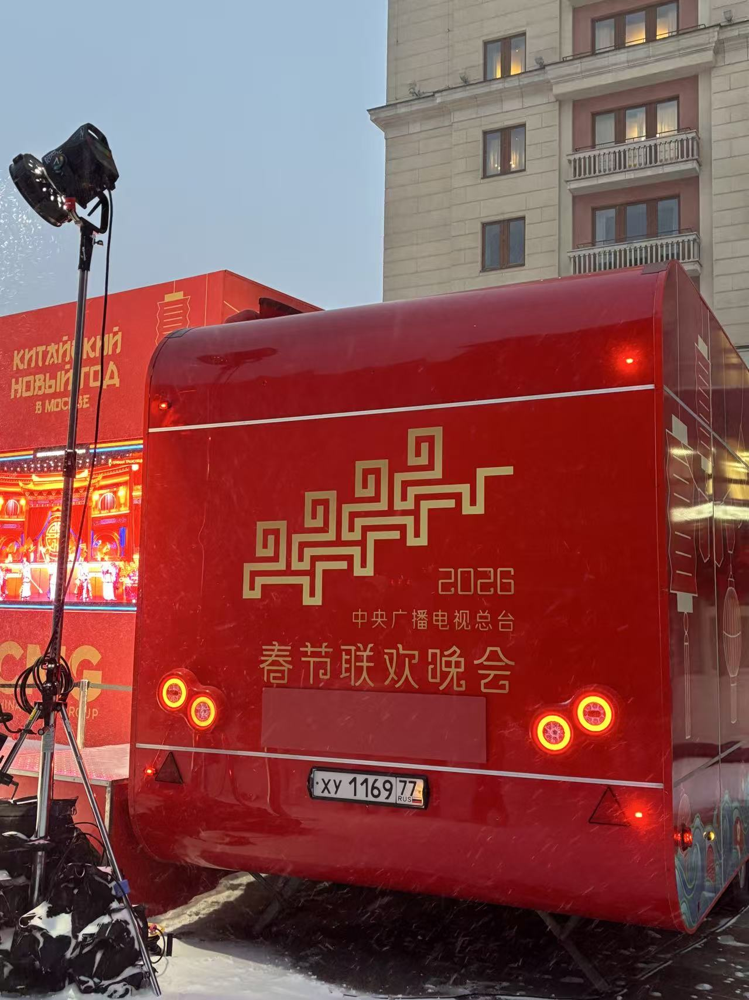
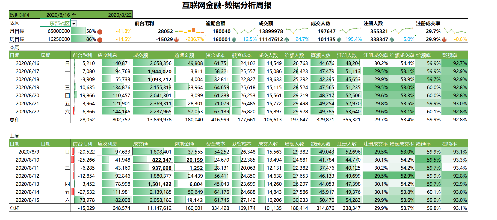
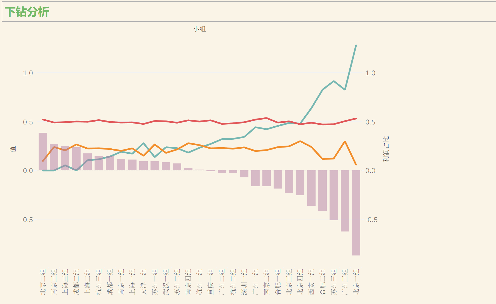
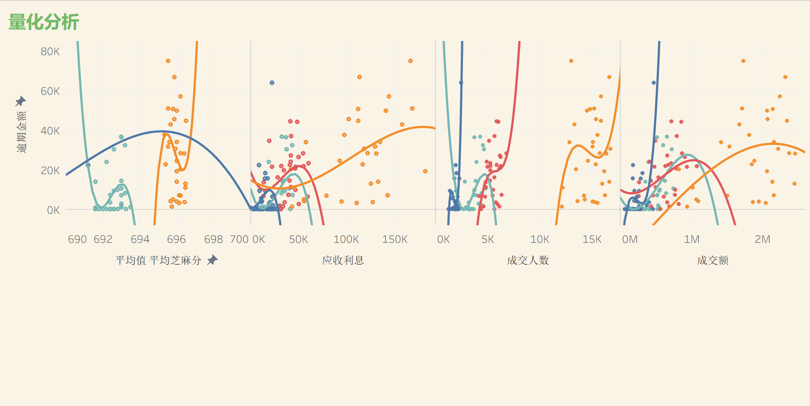
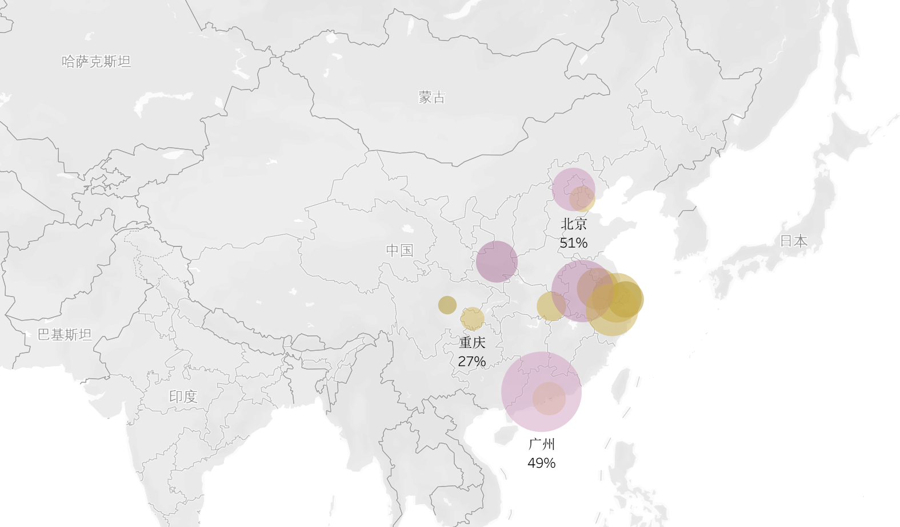

莫斯科国立大学
莫斯科国立大学
系统分析与管理硕士。主修数据库设计、系统分析与决策理论、人工智能系统、智能计算、数据可视化、数据挖掘。
● HELLO / 你好
海外用户运营 / 数据运营
具备统计学与系统分析背景，拥有海外用户运营、游戏/KOL 运营和社群运营经验。参与 TopTop 俄语区大户维护、活动执行与社区生态运营，结合用户反馈、数据分析和 AI 工具，支持用户体验优化与业务复盘。

RESUME / PREVIEW
01 / EDUCATION
系统分析与管理硕士。主修数据库设计、系统分析与决策理论、人工智能系统、智能计算、数据可视化、数据挖掘。
统计学学士。主修统计学、数据库原理和技术、回归分析、抽样技术与应用、数理统计学。
参与组织线上学生自习室活动，配合制定签到、学习陪伴和提醒机制；参与莫斯科中国春节红场活动志愿服务，承担现场引导、秩序维护和信息沟通等工作。
带领部门配合校团委、校科协开展竞赛和交流活动，参与挑战杯、节能减排大赛、邮储银行杯等赛事组织，积累多部门协同、材料准备和现场执行经验。
负责敬老院慰问演出等公益活动的节目统筹与现场协调，多次组织学生参与学校疫情防控秩序维护，具备服务意识和基层执行经验。

02 / THE PRACTITIONER
俄语区运营实习生
数据运营实习生
海内外 KOL 运营实习生
03 / PROJECTS
经营分析 · 自动化报表
统一 GMV、毛利率、成本占比、逾期率等指标口径，使用 Excel 制作经营周报，并用 Tableau 搭建收益分析看板。




增长分析 · 直播转化
以绽家抖音家居生活品牌直播间为分析对象，围绕 GMV 增长目标梳理“进入直播间-观看-点击商品-提交订单-支付成交”的完整转化路径，并从用户、商家、平台三方视角拆解关键动作。
04 / SKILLS
支持运营文案生成、反馈归类、竞品分析、作品集搭建和自动化文档生成。
05 / LIFE
喜欢用手作放慢节奏，也训练耐心、审美和细节把控。
关注 AI 工具、数据可视化和自动化方法，尝试把新工具用到学习与工作流里。
会收集优秀看板、图表和信息设计案例，训练结构化表达。
喜欢观察不同城市的商业、文化和生活方式。
通过播客和长内容了解行业变化，也训练对用户需求和表达方式的敏感度。